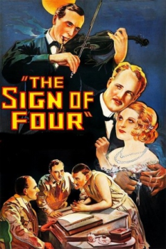
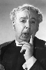

Country:United States, 77 minutes
Spoken languages:
Genres:Mystery, Thriller, Romance, Crime, Action
Director(s):Graham Cutts
Writer(s):Arthur Conan Doyle, W.P. Lipscomb
Video Codec:Unknown
Number: 1733


Certification:NR
Storyline:
A young woman turns to Sherlock Holmes for protection when she's menaced by an escaped killer seeking missing treasure. However, when the woman is kidnapped, Holmes and Watson must penetrate the city's criminal underworld to find her.
Cast: 

Medium: Original DVD,
Comments: Part of: Mystery Classics - 50 Movie Pack
Loaned: No
Aspect ratio: Unknown